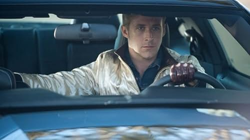

"Oppenheimer" (2023), a mais recente obra-prima de Christopher Nolan, é uma exploração fascinante da vida de J. Robert Oppenheimer e da criação da bomba atômica. A atenção meticulosa de Nolan aos detalhes e o compromisso com a precisão histórica criam uma narrativa cativante que investiga as complexidades éticas do progresso científico.
Os efeitos visuais do filme são inspiradores, transportando os espectadores para o coração do Projeto Manhattan, ao mesmo tempo que integram perfeitamente a turbulência interna dos personagens. A interpretação de Oppenheimer por Cillian Murphy é ao mesmo tempo sutil e poderosa, capturando a essência de um homem brilhante, mas atormentado.
A narrativa não linear de Nolan acrescenta profundidade e intriga, permitindo ao público compreender totalmente a gravidade da situação e as consequências das ações de Oppenheimer. A trilha sonora excepcional, composta por Ludwig Göransson, aumenta ainda mais a intensidade e o impacto emocional do filme.
“Oppenheimer” (2023) é imperdível tanto para os entusiastas da história quanto da ciência, demonstrando a capacidade incomparável de Nolan de mesclar narrativa e espetáculo. É uma experiência cinematográfica instigante que deixará os espectadores refletindo sobre as implicações éticas dos avanços científicos.
Resenha: Drive (2011)
*Escrito por: ChatGPT.

"I drive"
“Drive”, de Nicolas Winding Refn, é um thriller policial neo-noir que transcende as fronteiras de seu gênero, oferecendo aos espectadores uma experiência imersiva que é ao mesmo tempo visualmente deslumbrante e emocionalmente envolvente. No centro desta obra-prima cinematográfica está a atuação cativante de Ryan Gosling, que eleva o filme a novos patamares de brilho.
Gosling retrata o enigmático protagonista, conhecido apenas como “Driver”, com uma intensidade silenciosa que é ao mesmo tempo hipnotizante e assustadora. A partir do momento em que aparece na tela, Gosling chama a atenção com seu olhar de aço e comportamento discreto. Apesar de dizer pouco, seu personagem fala muito por meio de gestos e expressões sutis, transmitindo uma sensação de agitação interior e profundidade que é verdadeiramente notável.
Um dos aspectos mais marcantes da atuação de Gosling é sua capacidade de transmitir uma gama complexa de emoções sem depender do diálogo. Através de seu retrato matizado, os espectadores são atraídos para o mundo interior do Motorista, vivenciando seus momentos de ternura, raiva e vulnerabilidade com intensidade palpável. A atuação de Gosling é uma aula magistral de atuação discreta, demonstrando sua notável capacidade de transmitir emoções profundas com o mínimo de gestos.
Além de sua interpretação convincente do Motorista, Gosling também se destaca nas sequências de ação do filme, trazendo uma sensação de brutalidade controlada aos confrontos de seu personagem com os adversários. Seja ao volante de um carro ou em combate corpo a corpo, a fisicalidade e a presença de Gosling na tela são nada menos que eletrizantes, mantendo o público na ponta dos assentos durante os emocionantes cenários do filme.
Além disso, a química de Gosling com seus colegas de elenco, incluindo Carey Mulligan e Oscar Isaac, acrescenta profundidade e dimensão aos relacionamentos do filme, conferindo à narrativa uma ressonância emocional que é ao mesmo tempo comovente e profunda. Suas interações sutis com o personagem de Mulligan, em particular, impregnam o filme com uma sensação de saudade e melancolia que perdura muito depois de os créditos rolarem.
Concluindo, a atuação de Ryan Gosling em “Drive” é nada menos que extraordinária, elevando um filme já excepcional ao reino da grandeza cinematográfica. Sua interpretação do enigmático Driver é um tour de force de habilidade de atuação, mostrando sua capacidade de cativar o público com sua presença magnética e caracterização sutil. Para os fãs de narrativas convincentes e performances poderosas, “Drive” é absolutamente imperdível.
Resenha: Barbie (2023)
*Escrito por: Leo, IA do Brave.
"Every night is boy's night."
“Barbie” de Greta Gerwig (2023) é uma versão encantadora e refrescante da icônica franquia Barbie. Gerwig combina habilmente humor, nostalgia e comentários sociais, criando um filme cativante e sincero que ressoa tanto em crianças quanto em adultos.
O elenco é perfeito, com a interpretação da Barbie por Margot Robbie incorporando o equilíbrio perfeito entre charme, inteligência e vulnerabilidade. O elenco de apoio, incluindo Saoirse Ronan como o cínico mas adorável Skipper, acrescenta profundidade e complexidade ao enredo.
A direção de Gerwig é lúdica e comovente, explorando temas de identidade, empoderamento e o poder da imaginação. As cores vibrantes, o cenário extravagante e a trilha sonora cativante realçam ainda mais a atmosfera encantadora do filme.
“Barbie” (2023) é uma celebração da autodescoberta, lembrando-nos que abraçar a nossa individualidade e libertar-nos das normas sociais pode levar a uma vida mais plena. A visão e a narrativa únicas de Gerwig fazem de "Barbie" (2023) uma adição notável à franquia Barbie e imperdível para fãs de todas as idades.
Resenha: The Big Short (2015)
*Escrito por: ChatGPT.
"Short everything that man has touched."
"The Big Short", de Adam McKay, é um tour de force do cinema que aborda com maestria as complexidades da crise financeira de 2008 com inteligência, inteligência e urgência. Adaptado do livro de não ficção de mesmo nome de Michael Lewis, McKay oferece uma narrativa convincente que não apenas diverte, mas também educa, lançando luz sobre a ganância, a corrupção e a arrogância que levaram a um dos colapsos econômicos mais devastadores da história moderna.
No centro do filme está um elenco de talentos excepcionais, incluindo Christian Bale, Steve Carell, Ryan Gosling e Brad Pitt, cada um apresentando performances poderosas que dão vida a seus respectivos personagens. Bale, em particular, brilha como o excêntrico gestor de fundos de hedge Michael Burry, cuja visão e audácia em apostar contra o mercado imobiliário fazem dele um estranho e um visionário. Seu retrato é matizado e profundamente convincente, capturando a essência de um homem movido por suas convicções diante de um ceticismo avassalador.
Carell apresenta um desempenho que define sua carreira como o abrasivo e moralmente indignado gestor de fundos de hedge Mark Baum, cuja busca incansável pela verdade expõe a corrupção sistêmica e a falência moral no coração de Wall Street. A interpretação de Carell é crua e carregada de emoção, imbuindo Baum de um sentimento de justa indignação que ressoa muito depois de os créditos rolarem.
Gosling injeta energia e carisma no filme como o astuto e oportunista banqueiro Jared Vennett, servindo tanto como narrador quanto como antagonista ocasional. Sua presença magnética e humor aguçado acrescentam leveza ao tema pesado do filme, proporcionando um equilíbrio muito necessário à narrativa.
Pitt, num papel coadjuvante, apresenta um desempenho discretamente poderoso como o experiente comerciante Ben Rickert, cuja desilusão com a indústria financeira serve como uma bússola moral para os protagonistas do filme. Seu retrato discreto confere seriedade à exploração da ganância e da moralidade no filme, oferecendo um lembrete preocupante do custo humano da ambição desenfreada.
A direção de McKay é nítida e incisiva, combinando perfeitamente elementos de comédia, drama e documentário para criar um filme que é tão informativo quanto divertido. O uso de técnicas inovadoras, como quebrar a quarta parede e incorporar entrevistas da vida real e imagens de arquivo, acrescenta profundidade e autenticidade à narrativa, permitindo ao público uma imersão total no mundo das altas finanças.
Concluindo, “The Big Short” é um triunfo cinematográfico que aborda um assunto complexo e oportuno com inteligência, sagacidade e coração. Ancorado por performances estelares e direção magistral, o filme serve como um lembrete claro dos perigos da ganância desenfreada e da importância de responsabilizar aqueles que estão no poder. É imperdível para qualquer pessoa interessada em compreender os acontecimentos que levaram à crise financeira e o impacto duradouro que esta continua a ter na sociedade.
Recomendações
The Godfather
The Godfather Part II
The Godfather Part III
Inscreva-se na newsletter e receba conteúdos exclusivos na caixa de emails.